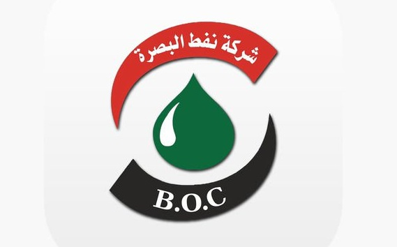
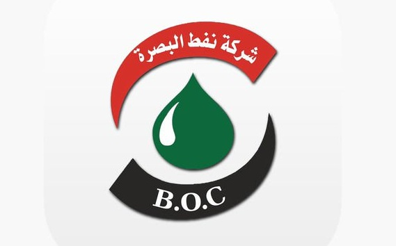

وزارة النفط العراقية

 

.jpg)
.jpg)


معهد التدريب النفطي / كركوك
معهد التدريب النفطي المسمى اختصاراً معهد النفط هو معهد دراسي عراقي يُعنى بالتدريب في مجالات القطاع النفطي، مهمته إعداد الفنيين في المجال النفطي لتعيينهم في شركات النفط، وحقول النفط، والمصافي العراقية، مدة الدراسة سنتان تقويميتان، تعادلان ثلاث سنوات لوجود برامج تدريبية تطبيقية أثناء العطل الصيفية، 70% من الدراسة عمَلية، و30% نظرية، ويقيم المعهد دورات تطويرية وتأهيلية لمنتسبي القطاع النفطي، وللمعهد فروع في عدة محافظات عراقية
.jpg)
نتائج دورات معهد التدريب النفطي / كركوك
شركة نفط البصرة
شركة نفط البصرة هي إحدى الشركات النفطية الكبيرة في العراق، وتتمتع بأهمية استراتيجية كبيرة نظراً لموقعها في جنوب العراق، حيث تقع بالقرب من حقول النفط الرئيسية في المنطقة. تأسست شركة نفط البصرة بعد الحرب العراقية الإيرانية في عام 1988، وتعمل على استخراج وتصدير النفط والغاز الطبيعي

نتائج دورات شركة نفط البصرة
معهد التدريب النفطي/البصرة
معهد التدريب النفطي في البصرة يُعد من الهيئات التعليمية المهمة في مجال صناعة النفط والغاز في العراق. يهدف المعهد إلى توفير التدريب والتعليم المتخصص للكوادر البشرية التي تعمل في قطاع النفط والغاز، وذلك لتعزيز كفاءتهم وتأهيلهم للعمل في هذا القطاع الحيوي. عادةً، يشمل برنامج التدريب في معهد التدريب النفطي البصرة دراسة الجوانب النظرية والعملية لعمليات استخراج النفط والغاز، بما في ذلك التقنيات الحديثة المستخدمة في الحفر والإنتاج، وإدارة حقول النفط، والصيانة، وسلامة العمل، والبيئة
نتائج دورات معهد التدريب النفطي / البصرة
معهد التدريب النفطي / بيجي
إن معهد التدريب النفطي بيجي هو احد دوائر وزارة النفط العراقية , يتولى مهمة إعداد الكوادر الفنية الوسطية للشركات و الدوائر النفطية ضمن الرقعة الجغرافية للمحافظات ( صلاح الدين , نينوى , الأنبار , ديالى ) من خلال قبول خريجي الدراسة الإعدادية حسب حاجة القطاع النفطي و إكسابهم المعارف و المهارات المطلوبة من خلال استخدام تقنيات التدريب النظرية و العملية الحديثة و الأجهزة و الآلات و المعدات الحديثة في مختبرات و ورش المعهد حيث ان مدة الدراسة في المعهد سنتان تقويميتان معادلة لثلاث سنوات كونها تضم تدريب و تطبيق أثناء العطلة الصيفية و منحهم شهادة الدبلوم الفني وفق المعايير الوطنية المعتمدة في منح الشهادة و يضم المعهد ( 14 ) اختصاص نفطي هي ( الإنتاج و القياسات الحقلية , حفر الابار , ميكانيك أجهزة الحفر , التشغيل و السيطرة , الغاز , التحليلات النفطية ,القياس و السيطرة , كهرباء المعدات النفطية , اللحام , المضخات و التوربينات , ميكانيك المعدات النفطية , ميكانيك المعدات الثقيلة , الخطوط و الأنابيب , HSE النفط العراقية

نتائج دورات معهد التدريب النفطي / بيجي
شركة مصافي الشمال
شركة مصافي الشمال هي إحدى الشركات النفطية الكبرى في العراق، وتتخصص في تكرير النفط الخام لإنتاج منتجات نفطية متنوعة مثل البنزين، والديزل، والمازوت، والكيروسين، والغاز الطبيعي المسال، بالإضافة إلى المشتقات البتروكيماوية. تقع مصافي الشمال في منطقة الشمال العراقية، وتحديداً في محافظة كركوك، وتعتبر من المنشآت الاستراتيجية التي تسهم بشكل كبير في اقتصاد العراق وتلبية احتياجات السوق المحلي من الوقود والمنتجات البترولية.

نتائج دورات شركة مصافي الشمال


معهد التدريب النفطي / ميسان
معهد التدريب النفطي في ميسان هو مؤسسة تعليمية متخصصة في تدريب وتأهيل الكوادر البشرية في مجال صناعة النفط والغاز. يهدف هذا المعهد إلى توفير التعليم والمهارات اللازمة للعاملين في هذا القطاع الحيوي، ويعتبر جزءاً من الجهود الرامية لتعزيز القدرات الوطنية في مجال استخدام الموارد النفطية بطريقة فعالة ومستدامة.